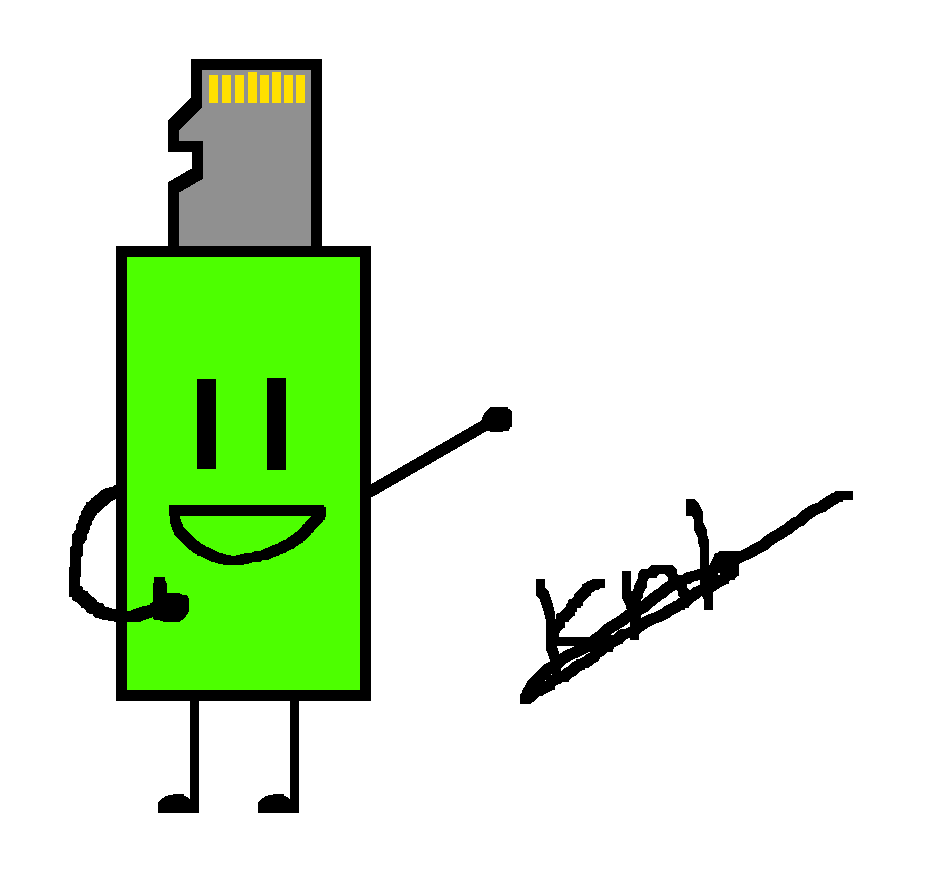
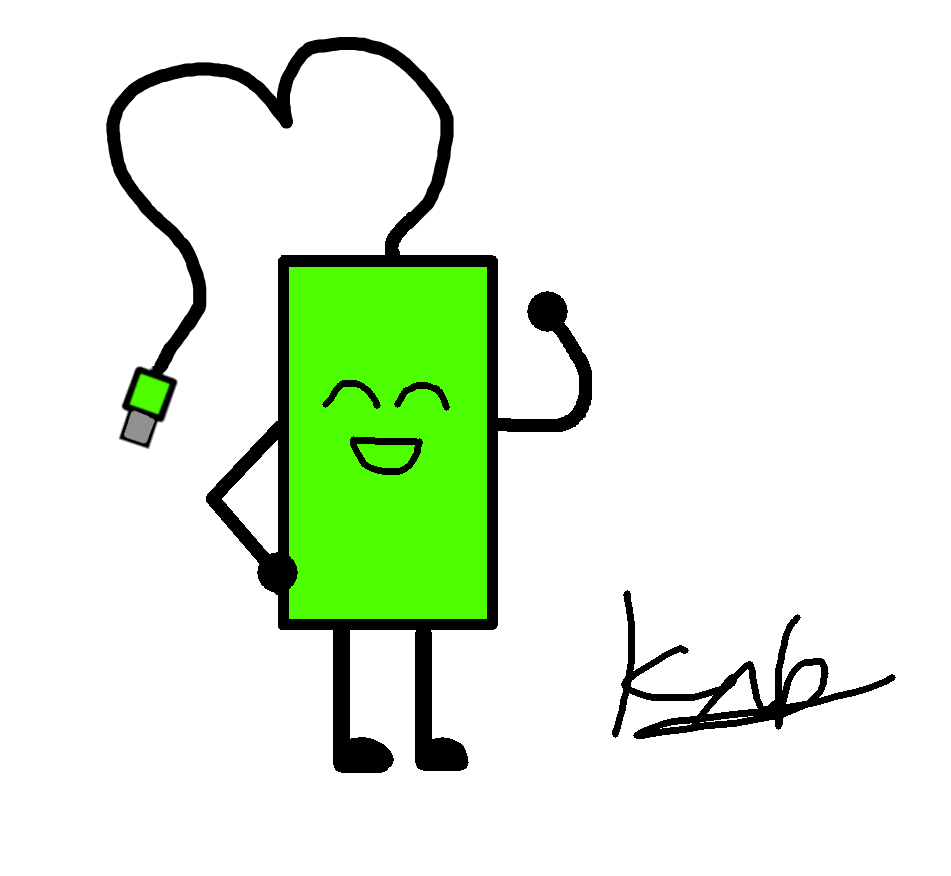

Back to homepage
My (KNBnoob1's) OC!!!

Microflash (Masculine)
Age: Uncertain
Biological gender: Male
Sexual orientation: Bisexual
Appearance: Humanoid resembling a USB drive with a microSD at the end instead of a USB connector.
Has two arms and legs, eyes and a mouth.
Personality: energetic, hyperactive, friendly, gets along well with others.
Easily adapts to his environment but often stubborn with his beliefs.
Sometimes emotionally unstable. Handle with caution.
Hobbies: programming, painting, reading, making models.

Microflash (Feminine)
Age: Uncertain
Biological gender: Female
Sexual orientation: Lesbian
Appearance: Humanoid resembling a microSD to USB-C dongle. The cable is used as "hair".
Has two arms and legs, eyes and a mouth.
Personality: Kind, passionate about what she does. Always gives a task her all.
However, she is rather shy, which makes it hard for her to make friends.
Hobbies: sewing, painting, botany, biology, music.

Trivia:
Both are cyborgs running MicroflashOS,
a custom-built operating system designed by the programmer Kenneth
White. He has unfortunately passed away.
MicroflashOS updates are pushed out monthly by Team Centurion (who took over the project after Kenneth's death).
However, ever since MicroflashOS was fully decompiled, many forks of the operating system have been created, most notably GigaflashOS.
MicroflashOS has had a rich history of exploits and jailbreaks.
More info about the MicroflashOS hacking scene's history can be found in the MicroflashOS lore file.
MicroflashOS updates are pushed out monthly by Team Centurion (who took over the project after Kenneth's death).
However, ever since MicroflashOS was fully decompiled, many forks of the operating system have been created, most notably GigaflashOS.
MicroflashOS has had a rich history of exploits and jailbreaks.
More info about the MicroflashOS hacking scene's history can be found in the MicroflashOS lore file.
Made
by KNBnoob1 with <3

This
page was made with
RetroZilla 2.2's Composer tool as a tribute to the
many highly creative websites of the 1990s and early 2000s, as a way
to test my user interface designing skills rather than my programming
skills.
Last updated 06/10/2025
3:30PM GMT+07:00